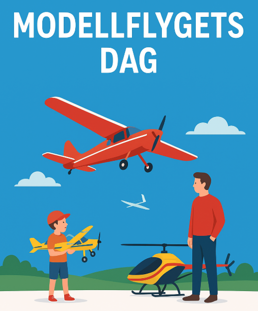
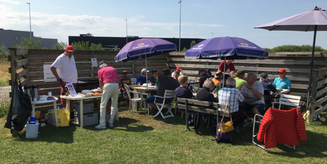

Modellflygets dagVälkommen till en dag fylld av kreativitet, teknik och flygglädje! Modellflygets dag är en årlig öppen dag där modellflygklubbar och entusiaster över hela landet öppnar sina fält för allmänheten. Det är ett perfekt tillfälle att upptäcka hur stor, varierad och rolig denna hobby faktiskt är! När: Förslag?Var: På modellflygklubbar. Vi behöver någon länk till översikt och presentation för besökare. Under dagen kan besökare:
|
 |
Förslag på lämplig dag som är lätt att komma ihåg. Kontakt
Jag tänker: Börja på säsongen så nya hinner komma igång innan hösten. Men inte för tidigt, våren bör finnas över hela landet.
Inte för sent så det hamnar i skolavslutningar och semestertider. Det skall också vara en dag många är lediga. Lördag med Söndag som backup?
Varför arrangeras Modellflygets dag?
Syftet är enkelt:
Att visa hur brett och tillgängligt modellflyget är, och göra det lättare för barn, ungdomar och vuxna att upptäcka en hobby som kombinerar gemenskap, teknik, kreativitet och utomhusaktivitet.
Modellflyg har under lång tid varit en viktig inkörsport till flyg, teknik och ingenjör. Många piloter, tekniker och ingenjörer har tagit sina första steg genom modellflyget. Samtidigt är det en hobby som passar lika bra för den som vill flyga lugnt och socialt som för den som vill fördjupa sig i teknik och utveckling.
Modellflygets dag handlar därför både om att visa upp flygning och modeller – och om att visa gemenskapen, kunskapsutbytet och glädjen i att göra något tillsammans.
För nya besökare
Du behöver inga förkunskaper. Bara nyfikenhet!
Det finns modeller och aktiviteter för alla åldrar, och klubbarna hjälper dig att hitta rätt väg in i hobbyn — oavsett om du vill flyga för nöjes skull, tävla, bygga eller bara lära dig mer om teknik.
För hela familjen
Modellflyg är en social och inkluderande hobby där erfarenhet och kunskap ofta förs vidare mellan generationer. Under Modellflygets dag är alla välkomna: barn, föräldrar, mor- och farföräldrar, teknikintresserade eller du som bara gillar flyg.

Orkar du inte vänta på denna spännande dag
De flesta klubbar har återkommande klubbdagar där medlemmar träffas och flyger tillsammans. Åk gärna ut och hälsa på. Utöver detta arrangeras även planerade större träffar och evenemang.
Kalender - Skånskt modellflyg (Öppnas i ett nytt fönster)
Kalender - RCFF (Öppnas i ett nytt fönster)
Andra dagar
19 Augusti - Luftfartsdagen. Uppmärksamma framsteg och innovationer inom flygets värld.
12 September - TV-speldagen. Uppmärksamma TV-spelets betydelse som kultur och mötesplats. Så ta fram och flyg med era simulatorer, gärna online.